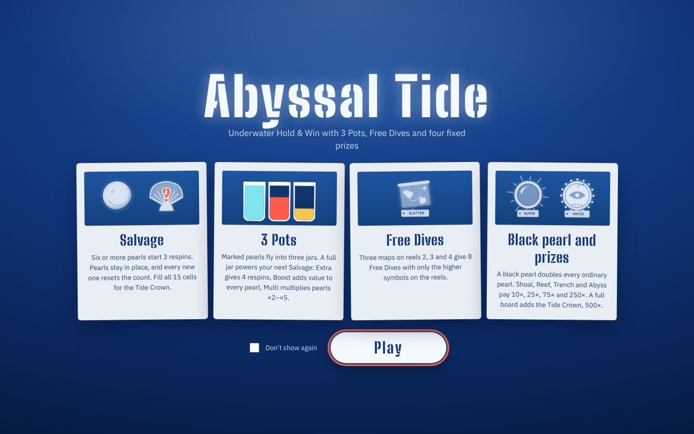
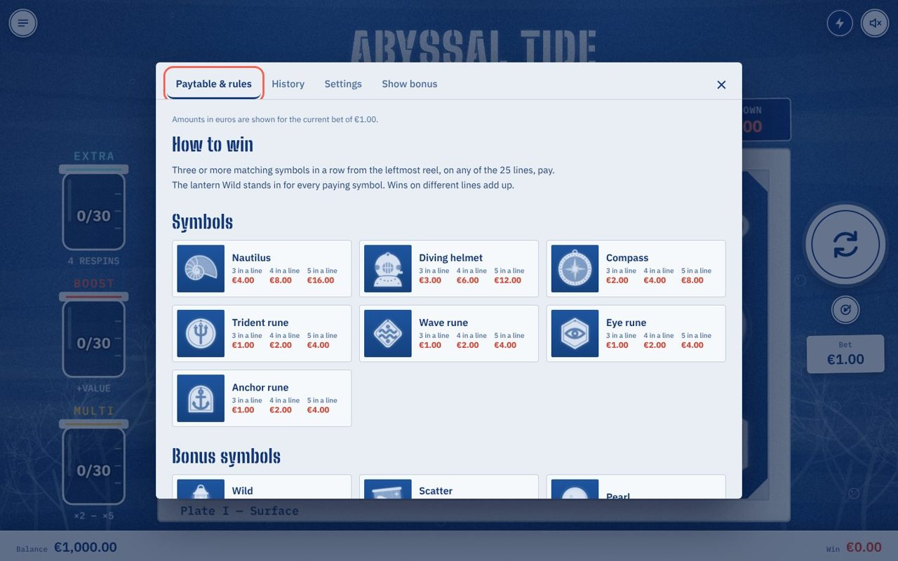
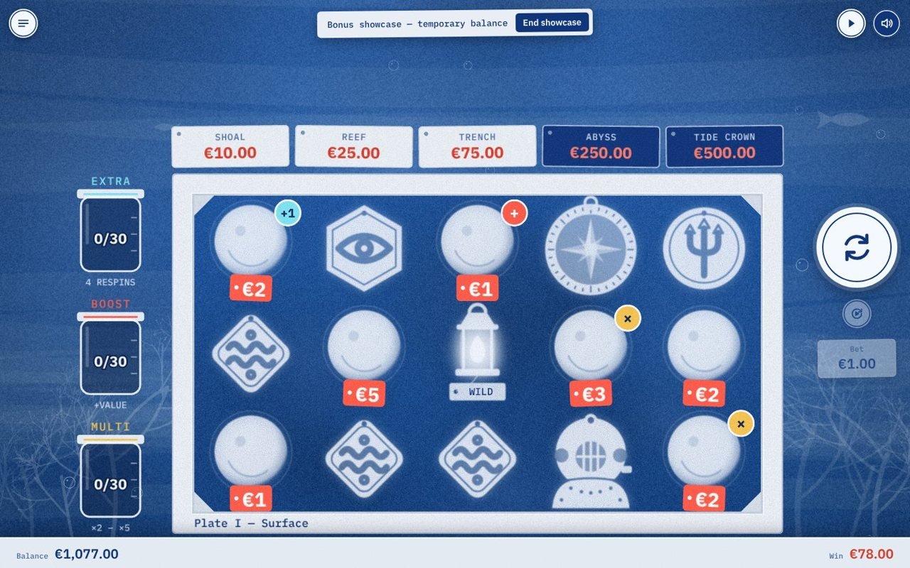
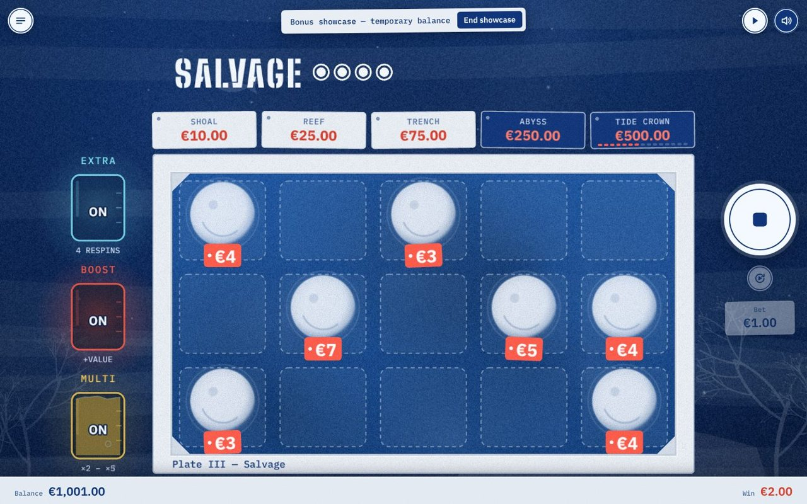
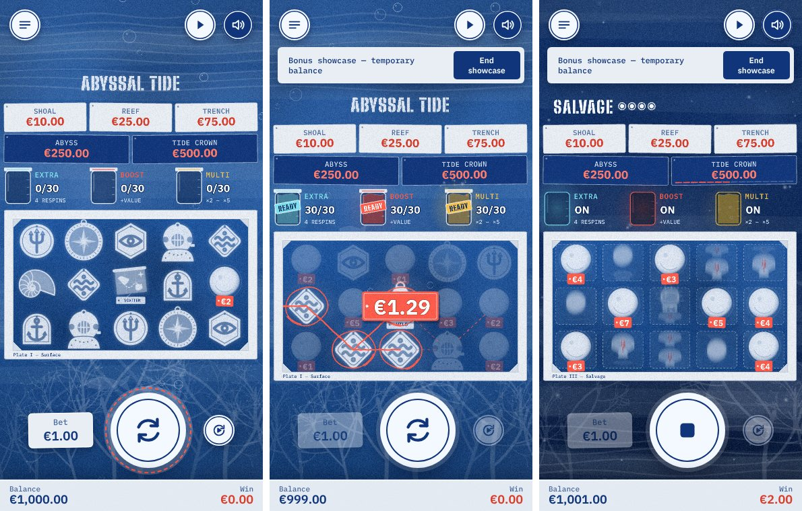
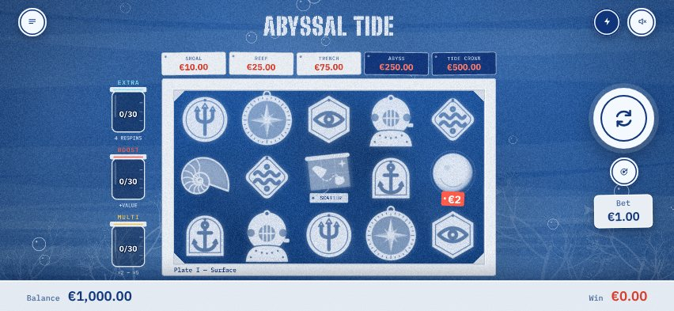

The game
A 5×3 slot with 25 lines and two features. Free Dives are free spins with only the high symbols on the reels. Salvage is a Hold & Win: pearls lock in place, every new one resets the respins, a black pearl doubles them all, and sealed shells open at the end.
The art follows Anna Atkins’ 1843 cyanotypes: salvaged objects printed as white photograms on Prussian-blue paper and mounted like museum plates. Coral pencil is the only accent, and it marks money and wins. Every image and sound is generated in code.


3 Pots
The bonus accumulator I added to the original design. About one base-game spin in five lands a pearl with a coloured mark. The mark flies along a trail into its jar, and each bet level keeps its own jars. A full jar of 30 marks powers the next Salvage and empties:
- Extra starts the bonus with four respins instead of three.
- Boost adds +1 to +5 bets to every starting pearl.
- Multi multiplies one to three pearls by ×2, ×3 or ×5 at the end.
| Simulated over 5,000,000 rounds | |
|---|---|
| Return to player | 95.9–96.2% |
| Salvage with a given pot active | about 28.5% |
| Salvage with all three | 13% |
| Average Salvage, no pots / with pots | 35× / 52× bet |


One engine, two homes
The rules are a pure function, step(state, request, provider), with no DOM, timers or storage. The same code runs in the browser for the offline demo and on a Node server.
The server (Fastify and PostgreSQL) is shaped like a remote game server. It handles sessions, server-side cryptographic RNG and a ledger of every bet and win. Each request is one transaction that locks the player’s row. Repeating a step id, after a double click or a lost response, returns the stored result without a second debit. If the server cannot be reached, the client falls back to offline play and says so.
A maximum win cap and market rules sit outside the math. The UK profile follows the Gambling Commission’s technical standards: at least 2.5 seconds per game, no turbo, slam stop or autoplay, no celebration of wins at or below the stake, net position and session time on screen, and a reality check.
Every screen
The layout is chosen by orientation, not by width. A phone held sideways keeps the side column of controls, while a portrait screen puts them in a row under the board. The HUD scales with the screen, respects notches and the home indicator, and stays next to the game on ultrawide monitors. The board picks whichever of two compositions gives the larger field.


Art and Spine
The symbols are drawn as SVG. A build step renders them in headless Chrome, packs them with AssetPack into one atlas, and the game loads the atlas instead of rasterising at start-up.
The big-win character is a diving helmet animated in Spine: 16 bones, 13 slots, an intro, a seamless idle loop and an outro. Its skeleton is generated in code in Spine 4.3 JSON and read by the official runtime, and its time runs on the same GSAP clock as the rest of the game, so skipping a win also skips the character.
For the next game
Everything that is not specific to Abyssal Tide lives in a monorepo of packages:
@slotkit/coreGame time on GSAP, skippable episodes, speed profiles, money in cents, diagnostics@slotkit/boardReels that stop strictly in order, symbol motion presets, hand-drawn win lines@slotkit/controlsHold-to-spin, a bet grid, autoplay with stop conditions@slotkit/paytablePaytable and rules described as data@slotkit/symbols-cyanotypeThis art as a pack: SVG, atlas, Spine character, gallery